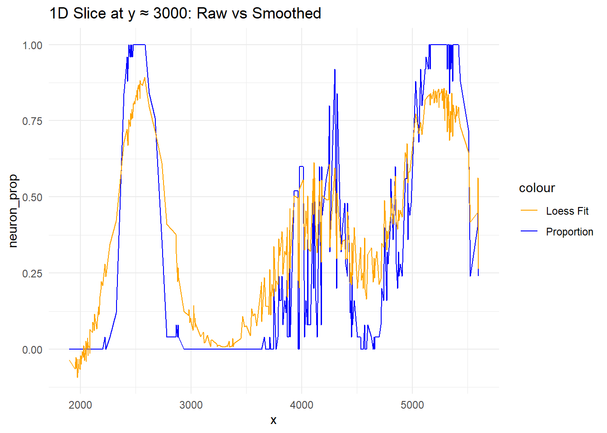

# download data
dir.create('data')
file_list <- c('gene_counts', 'cell_coords', 'neuron_cells', 'other_cells',
'positive_genes', 'negative_genes', 'other_genes')
for(filename in file_list) {
download.file(paste0('https://github.com/dmcable/BIOSTAT620/raw/main/data/p9/',filename,'.rds'),
destfile = paste0('data/',filename,'.rds'))
}
# required packages
library(ggplot2)
library(Matrix)
library(tidyverse)
# load data
counts <- readRDS('data/gene_counts.rds') # gene counts matrix
coords <- readRDS('data/cell_coords.rds') # cell coords matrix
neuron_cells <- readRDS('data/neuron_cells.rds') # list of neuron cell barcodes.
other_cells <- readRDS('data/other_cells.rds') # list of non-neuron cell barcodes.
positive_genes <- readRDS('data/positive_genes.rds') # list of genes specific for neurons
negative_genes <- readRDS('data/negative_genes.rds') # list of genes specific for not neurons
other_genes <- readRDS('data/other_genes.rds') # selected list of other genes
all_genes <- c(positive_genes, negative_genes, other_genes) # all genes
small_counts <- as.matrix(counts[all_genes, c(neuron_cells, other_cells)]) # subset of the countsPset 09
set.seed(2025)
ggplot(coords, aes(x = x, y = y)) +
geom_point(alpha = 0.5, size = 1) +
coord_fixed() +
ggtitle("Spatial Coordinates of Cells") +
theme_minimal()hpca_counts <- counts["Hpca", ]
hpca_vec <- as.numeric(hpca_counts)
ggplot(data.frame(hpca = hpca_vec[hpca_vec > 0]), aes(x = hpca)) +
geom_histogram(bins = 100, fill = "orange", color = "black") +
ggtitle("Histogram of Hpca Expression (non-zero)") +
xlab("Expression Count") +
ylab("Frequency") +
theme_minimal()coords$Hpca <- as.numeric(hpca_counts[rownames(coords)])
max_threshold <- quantile(coords$Hpca, 0.99)
ggplot(coords, aes(x = x, y = y, color = pmin(Hpca, max_threshold))) +
geom_point(size = 1) +
scale_color_viridis_c(option = "A") +
ggtitle("Spatial Plot of Hpca Expression (Clipped)") +
coord_fixed() +
theme_minimal()# 添加 barcode 列到 coords
coords$barcode <- rownames(coords)
# 合并 neuron / non-neuron 信息
cell_type <- data.frame(barcode = c(neuron_cells, other_cells),
type = rep(c("Neuron", "Non-neuron"),
c(length(neuron_cells), length(other_cells))))
plot_df <- inner_join(coords, cell_type, by = "barcode")
ggplot(plot_df, aes(x = x, y = y, color = type)) +
geom_point(size = 1, alpha = 0.6) +
scale_color_manual(values = c("Neuron" = "blue", "Non-neuron" = "red")) +
ggtitle("Cell Types") +
coord_fixed()library(FNN)
# Extract coordinates
xy <- as.matrix(plot_df[, c("x", "y")])
# Compute KNN
knn_result <- get.knn(xy, k = 25)
# Choose the index of the cell to visualize
first_cell_idx <- 1000 # You can change this to other values (e.g., 500, 1500)
# Get the indices of its 25 nearest neighbors
neighbors_idx <- knn_result$nn.index[first_cell_idx, ]
# Label the center cell, its neighbors, and others
plot_df$highlight <- "Other"
plot_df$highlight[first_cell_idx] <- "Center"
plot_df$highlight[neighbors_idx] <- "Neighbor"
# Visualize
ggplot(plot_df, aes(x = x, y = y, color = highlight)) +
geom_point(size = 1) +
scale_color_manual(values = c("Center" = "black", "Neighbor" = "green", "Other" = "gray")) +
ggtitle(paste("25 Nearest Neighbors of Cell", first_cell_idx)) +
coord_fixed()
# Logical vector indicating whether each cell is a neuron
is_neuron <- plot_df$type == "Neuron"
# Compute proportion of neuron neighbors for each cell
neuron_proportion <- sapply(1:nrow(plot_df), function(i) {
mean(is_neuron[knn_result$nn.index[i, ]])
})
# Add to dataframe
plot_df$neuron_prop <- neuron_proportion
# Plot
ggplot(plot_df, aes(x = x, y = y, color = neuron_prop)) +
geom_point(size = 1) +
scale_color_viridis_c() +
ggtitle("Proportion of Neuron Neighbors (k = 25)") +
coord_fixed()# Fit loess smoother
loess_fit <- loess(neuron_prop ~ x * y, data = plot_df, span = 0.05, degree = 1)
# Predict smoothed values
plot_df$loess_smooth <- predict(loess_fit)
# Visualize the smoothed result
ggplot(plot_df, aes(x = x, y = y, color = loess_smooth)) +
geom_point(size = 1) +
scale_color_viridis_c(name = "Loess Fit") +
ggtitle("Loess Smoothing of Neuron Proportion") +
coord_fixed()# Subset cells near y = 3000
slice_df <- filter(plot_df, abs(y - 3000) < 50)
# Plot proportion vs smoothed loess
ggplot(slice_df, aes(x = x)) +
geom_line(aes(y = neuron_prop, color = "Proportion")) +
geom_line(aes(y = loess_smooth, color = "Loess Fit")) +
scale_color_manual(values = c("Proportion" = "blue", "Loess Fit" = "orange")) +
ggtitle("1D Slice at y ≈ 3000: Raw vs Smoothed") +
theme_minimal()
# Run PCA on unnormalized data
pca_raw <- prcomp(t(small_counts), scale. = TRUE)
# Calculate total expression per cell
total_counts <- colSums(small_counts)
# Plot PC1 vs total count
ggplot(data.frame(PC1 = pca_raw$x[, 1], Total = total_counts), aes(x = Total, y = PC1)) +
geom_point(alpha = 0.4) +
ggtitle("PC1 vs Total Gene Expression")# Normalize counts (column-wise)
norm_counts <- sweep(small_counts, 2, colSums(small_counts), "/")
# Run PCA on normalized data
pca_norm <- prcomp(t(norm_counts), scale. = TRUE)
# Variance explained
var_explained <- pca_norm$sdev^2 / sum(pca_norm$sdev^2)
var_df <- data.frame(PC = 1:500, Variance = var_explained[1:500])
# Plot
ggplot(filter(var_df, Variance < 0.05), aes(x = PC, y = Variance)) +
geom_line() +
ggtitle("Variance Explained (<5%) by First 500 PCs") +
theme_minimal()# Add PC scores to plot_df and visualize each
for (i in 1:4) {
plot_df[[paste0("PC", i)]] <- pca_norm$x[, i]
print(
ggplot(plot_df, aes(x = x, y = y, color = !!sym(paste0("PC", i)))) +
geom_point(size = 1) +
scale_color_viridis_c() +
ggtitle(paste("Spatial Plot of PC", i)) +
coord_fixed()
)
}loadings <- pca_norm$rotation
gene_category <- rep(c("Positive", "Negative", "Other"),
c(length(positive_genes), length(negative_genes), length(other_genes)))
names(gene_category) <- c(positive_genes, negative_genes, other_genes)
rotation_df <- as.data.frame(loadings)
rotation_df$gene <- rownames(rotation_df)
rotation_df$category <- gene_category[rownames(rotation_df)]
library(tidyr)
long_df <- pivot_longer(rotation_df, cols = starts_with("PC"), names_to = "PC", values_to = "weight")
avg_df <- long_df %>%
filter(PC %in% paste0("PC", 1:20)) %>%
group_by(PC, category) %>%
summarise(mean = mean(weight), .groups = "drop")
ggplot(avg_df, aes(x = as.numeric(gsub("PC", "", PC)), y = mean, color = category)) +
geom_point() +
labs(x = "PC Index", y = "Average Weight", title = "Average Gene Set Weight by PC")avg_df_se <- long_df %>%
filter(PC %in% paste0("PC", 1:5)) %>%
group_by(PC, category) %>%
summarise(mean = mean(weight), se = sd(weight)/sqrt(n()), .groups = "drop")
ggplot(avg_df_se, aes(x = as.numeric(gsub("PC", "", PC)), y = mean, color = category)) +
geom_point() +
geom_errorbar(aes(ymin = mean - se, ymax = mean + se), width = 0.2) +
labs(x = "PC Index", y = "Avg Weight ± SE", title = "First 5 PCs with Error Bars")cat("Among the first 5 principal components, PC1 and PC2 show statistically significant differences
between gene categories (positive, negative, other), as seen from their non-overlapping error bars.
This suggests that early PCs capture biologically meaningful variation across gene types.
")Among the first 5 principal components, PC1 and PC2 show statistically significant differences
between gene categories (positive, negative, other), as seen from their non-overlapping error bars.
This suggests that early PCs capture biologically meaningful variation across gene types.